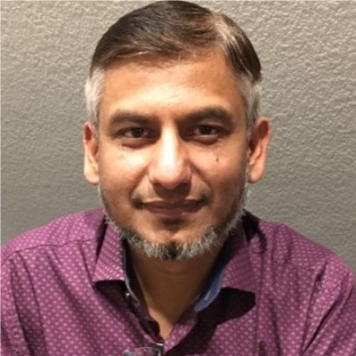

Azam Khan

Summary
-
I am a growth-oriented, focused, innovative, and analytical
software engineer, with comprehensive experience in application
development within diverse industries.
-
I have 20+ years of experience in delivering data-centric and
complex applications for fortune 500 customers.
-
I have excellent communication, planning, time management skills
and experience working with cross-functional and global team
environments.
Education
- Bachelor of Commerce, University of Karachi (1995 - 1997)
-
Diploma Software Engineering, Institute of Computer Technology
(1994 - 1996)
Work Experience
Sr. Software Engineer, NCR Corporation
June 2013 - Present
-
Designed and implemented a solution to collect statistics about
MICR, CAR/LAR, Duplicate, IQA failure count of processed checks
and deposits in recognition server
-
Enhanced functionality of Capture Mobile Deposit application by
adding support to detect user location to prevent fraudulent use
of mobile app
-
Enhanced purged utility to delete obsolete data in batches to
reduce purge time significantly. It went from couple of hours to
minutes
-
Improved functionality of PuffCodeLine formatter to parse MICR
line and trim it based on specified configuration format. This
helped eliminating ghost characters and whitespaces and reduced
overhead of failed MICR line
-
Designed and implemented deposit limit constraints to enforce
configurable limits at deposit and location level
-
Worked on deposit notification service to notify about the state
change of a deposit to registered end point
-
Worked on data perfection utility to process unit of work coming
in a loopback from transaction gateway to record adjustments
made to the deposit
-
Contributed to the feature in consolidate server to ensure
deposit is in transmissible state before sending it to the
downstream
-
Generated flat files based on specified format to feed to the
legacy system via ftp for billing purposes
-
Contributed to the passport integration module to add numerous
request processors to handle incoming requests from external
channels
-
Contributed to resolve security vulnerabilities identified by
Coverity, Whitesource, Sonar under the guideline provided by
OWASP (Open Web Application Security Project)
-
Helped achieving quality objective by maintaining 80% or more
code coverage
Skills
- JAVA
- Spring
- Hibernate
- Rest API
- Node
Awards and Certifications
- Teradata Certified Professional (Jan 2009)
- Oracle Certified Professional (Jan 2004)
- Microsoft Certified Professional (VB and NT) (Jan 1999)
Other
©Azam Khan - All rights reserved